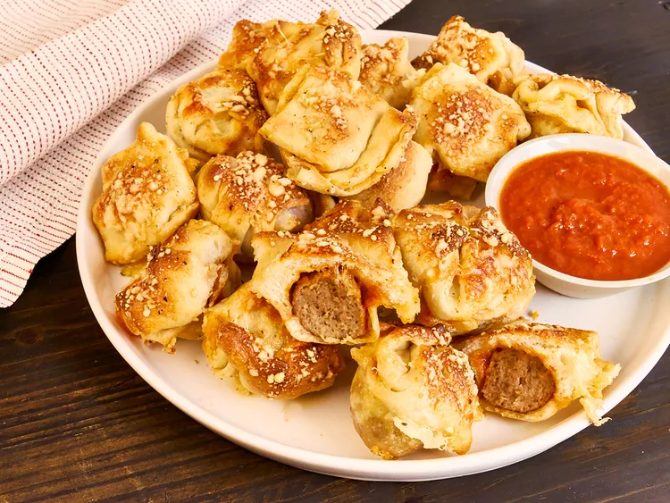

Pizza

Description
These meatball slider bombs, like bite-sized Italian meatball sandwiches, are quick to prepare with frozen meatballs and refrigerated pizza dough.
Ingredients
- 2 (13.8 ounce) cans refrigerated pizza dough
- 24 frozen party-size meatballs, thawed slightly
- 2/3 cup marinara sauce, plus more for serving
- 1 1/2 cups shredded mozzarella cheese
- 3 tablespoons olive oil
- salt and freshly ground black pepper, to taste
- additional optional seasonings include crushed red pepper flakes, Italian Seasoning, and garlic powder or minced garlic
- 1/4 cup freshly grated Parmesan cheese
Steps
- Preheat the oven to 400 degrees F (200 degrees C). Lightly grease a mini muffin tin with cooking spray.
- Roll one can of dough out on a lightly floured surface into a rectangle slightly larger than the muffin tin and place the dough on top of the muffin tin. Lightly press dough into each muffin cup. (Alternatively, place a second mini muffin pan on top of dough to easily press dough into each cup.)
- Place a meatball into each muffin cup and top evenly with sauce and mozzarella cheese.
- Roll remaining dough into a similar rectangle and place it on top. Press dough to seal each section, then use a knife to cut dough around each cup, forming 24 individual meatball sliders.
- For each filled muffin cup, bring top corner of dough to meet bottom corner on the opposite side; repeat with the other side. Twist dough together lightly on top; pinch to seal. Repeat with all sections.
- Place oil in a small bowl and season with optional seasonings if desired. Brush oil over each meatball slider and sprinkle evenly with grated Parmesan cheese.
- Bake in the preheated oven until golden brown and toasted, 22 to 24 minutes. Serve with extra marinara for dipping.
Home